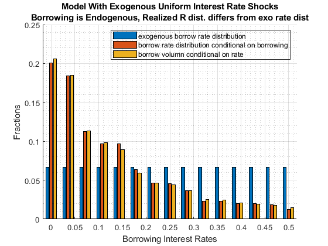

With Interest Rate Shocks, What is the Distribution of the Borrowing Interest Rate
back to Fan's Dynamic Assets Repository Table of Content.
@seealso
- test speed: fsi_abz_ds_vecsv_speed
- test joint RANDOM: fsi_abz_ds_vecsv_joint_rand
- test price no default CROSS: fsi_abz_ds_vecsv_price_nbc_cross
- test price default CROSS: fsi_abz_ds_vecsv_price_default_cross
- test interest rate no default: fsi_abz_ds_vecsv_nbc
- test interest rate no default CROSS: fsi_abz_ds_vecsv_nbc_cross
- test interest rate no default GRID: fsi_abz_ds_vecsv_nbc_grid
- test interest rate default: fsi_abz_ds_vecsv_default
- test interest rate default V(a,z) Comparison: fsi_abz_ds_vecsv_default_compaz
- test interest rate default CROSS: fsi_abz_ds_vecsv_default_cross
- test interest rate default GRID: fsi_abz_ds_vecsv_default_grid
- test shock default (very low cmin): fsi_abz_ds_vecsv_shk_default_lowcmin
- test shock no default: fsi_abz_ds_vecsv_shk_nbc
- test shock no default CROSS: fsi_abz_ds_vecsv_shk_nbc_cross
- test shock default: fsi_abz_ds_vecsv_shk_default
- test shock default CROSS: fsi_abz_ds_vecsv_shk_default_cross
- test preference no default: fsi_abz_ds_vecsv_pref_nbc
- test preference no default CROSS: fsi_abz_ds_vecsv_pref_nbc_cross
- test preference default: fsi_abz_ds_vecsv_pref_default
- test preference default CROSS: fsi_abz_ds_vecsv_pref_default_cross
- test preference default (very low cmin): fsi_abz_ds_vecsv_pref_default_lowcmin
Contents
Solve the Model
Wide interest rate difference between min and max, uniform exogenous distribution.
clear all; close all; it_param_set = 9; [param_map, support_map] = ffs_abz_set_default_param(it_param_set); % param_map('it_a_n') = 50; % param_map('it_z_wage_n') = 15; param_map('fl_z_r_borr_max') = 0.50; param_map('fl_z_r_borr_min') = 0.00; % param_map('st_z_r_borr_drv_prb_type') = 'unif'; param_map('st_z_r_borr_drv_prb_type') = 'unif'; % param_map('fl_z_r_borr_poiss_mean') = 10; param_map('fl_z_r_borr_n') = 15; param_map('it_z_n') = param_map('it_z_wage_n') * param_map('fl_z_r_borr_n'); [armt_map, func_map] = ffs_abz_get_funcgrid(param_map, support_map); result_map = ff_abz_vf_vecsv(param_map, support_map, armt_map, func_map); result_map = ff_az_ds_vecsv(param_map, support_map, armt_map, func_map, result_map);
Elapsed time is 18.751154 seconds.
Elapsed time is 48.188193 seconds.
mean sd coefofvar min max pYis0 pYls0 pYgr0 pYisMINY pYisMAXY p0_1 p1 p5 p10 p15 p20 p25 p35 p50 p65 p75 p80 p85 p90 p95 p99 p99_9 fl_cov_cl_mt_val fl_cor_cl_mt_val fl_cov_cl_mt_pol_a fl_cor_cl_mt_pol_a fl_cov_cl_mt_coh fl_cor_cl_mt_coh fl_cov_cl_mt_pol_c fl_cor_cl_mt_pol_c fracByP0_1 fracByP1 fracByP5 fracByP10 fracByP15 fracByP20 fracByP25 fracByP35 fracByP50 fracByP65 fracByP75 fracByP80 fracByP85 fracByP90 fracByP95 fracByP99 fracByP99_9
______ _______ _________ _______ ______ _______ _________ _______ __________ ___________ ________ _________ ________ _______ _______ _______ ________ _______ _______ _______ ______ ______ ______ ______ ______ ______ ______ ________________ ________________ __________________ __________________ ________________ ________________ __________________ __________________ ___________ ___________ __________ __________ __________ __________ __________ _________ _________ _________ _________ _________ _________ _________ _________ _________ ___________
cl_mt_val 3.1995 1.643 0.51351 -18.519 14.897 0 0.019248 0.98075 4.3953e-12 -5.2878e-35 -1.8002 -0.62557 0.28635 1.1389 1.4318 1.9591 1.9803 2.7385 3.1357 3.7797 4.3132 4.5532 4.9143 5.3215 5.9502 7.0885 8.1805 2.6993 1 1.5788 0.78191 1.4798 0.70622 0.57217 0.99367 -0.00067087 -0.0040562 -0.0026623 0.0181 0.032661 0.079252 0.093494 0.18667 0.29779 0.46322 0.58939 0.65585 0.73385 0.80884 0.89763 0.97633 0.99734
cl_mt_pol_a 0.8659 1.229 1.4193 -6.557 48.412 0.16861 0.04284 0.78855 5.2025e-12 -5.2878e-35 -0.20568 -0.086712 0 0 0 0 0.020638 0.16817 0.38947 0.75831 1.2009 1.496 1.8648 2.4549 3.4139 5.6269 8.3563 1.5788 0.78191 1.5104 1 1.5259 0.97352 0.34276 0.79576 -0.0003154 -0.0016358 -0.0034988 -0.0034988 -0.0034988 -0.0034988 -0.0014641 0.015835 0.054796 0.14903 0.26322 0.34955 0.43602 0.56896 0.73179 0.92345 0.98916
cl_mt_coh 1.2072 1.2754 1.0564 -6.557 50.64 0.01124 0.0069353 0.98182 4.42e-12 1.8295e-35 -0.13007 0 0.091429 0.18286 0.2638 0.32534 0.40269 0.52401 0.73677 1.1447 1.5808 1.8709 2.2771 2.8504 3.8368 6.0876 8.9292 1.4798 0.70622 1.5259 0.97352 1.6265 1 0.32449 0.72598 -0.00015061 -0.00034518 0.0016025 0.0077435 0.016098 0.028278 0.043822 0.082239 0.1603 0.27453 0.38654 0.45755 0.54277 0.64849 0.78471 0.9394 0.99174
cl_mt_pol_c 1.3013 0.35047 0.26932 0.01 4.8668 0 0 1 7.0231e-11 -5.2878e-35 0.46518 0.54193 0.71274 0.80847 0.96021 0.98747 1.045 1.1855 1.2951 1.4128 1.5103 1.5951 1.6839 1.7777 1.8899 2.117 2.3938 0.57217 0.99367 0.34276 0.79576 0.32449 0.72598 0.12283 1 0.00033915 0.0040513 0.023875 0.059899 0.08984 0.14074 0.16471 0.25987 0.39194 0.5529 0.66434 0.73114 0.78749 0.85261 0.92212 0.98282 0.99811
Obtain The Joint Distribution of Shocks and Savings/Borrowing
Even though the interest rate is exogenous, borrowing and savings decisions are endogenous and are a function of the borrowing rate. The realized borrowing interest rate distribution is only for households that are borrowing.
ar_a = armt_map('ar_a'); ar_z_r_borr_mesh_wage = armt_map('ar_z_r_borr_mesh_wage'); ar_z_wage_mesh_r_borr = armt_map('ar_z_wage_mesh_r_borr'); ar_z_r_borr_prob = armt_map('ar_z_r_borr_prob'); ar_z_r_borr = armt_map('ar_z_r_borr'); tb_outcomes = result_map('tb_outcomes'); cl_mt_pol_a = result_map('cl_mt_pol_a'); ds_stats_pol_a_map = cl_mt_pol_a{2}; ds_stats_pol_a_map_keys = ds_stats_pol_a_map.keys; mt_choice_prob_byYZ = ds_stats_pol_a_map('mt_choice_prob_byYZ'); ar_choice_unique_sorted_byY = ds_stats_pol_a_map('ar_choice_unique_sorted_byY'); % disp(mt_choice_prob_byYZ); if (norm(sum(mt_choice_prob_byYZ,'all') - 1) <= -1e-12) error('error:sum(mt_choice_prob_byYZ,''all'') ~= 1'); end
Marginal Distributional of Realized Borrowing Interest Rate
Adding up across borrowing levels for each borrowing rate shock
it_z_wage_n = param_map('it_z_wage_n'); fl_z_r_borr_n = param_map('fl_z_r_borr_n'); [it_mt_row_n, it_mt_col_n] = size(mt_choice_prob_byYZ); mt_choice_prob_byYrZ = zeros(it_mt_row_n, fl_z_r_borr_n); ar_z_r_borr_dup = zeros(1, fl_z_r_borr_n); for it_z_r_borr_ctr=1:1:fl_z_r_borr_n it_start_col = it_z_wage_n*(it_z_r_borr_ctr-1) + 1; it_end_col = it_start_col + it_z_wage_n - 1; ar_z_r_borr_dup(it_z_r_borr_ctr) = ar_z_r_borr_mesh_wage(it_start_col); mt_choice_prob_byYrZ(:, it_z_r_borr_ctr) = sum(mt_choice_prob_byYZ(:, it_start_col:it_end_col),2); end % R must equal to what was set if (ar_z_r_borr_dup ~= ar_z_r_borr) error('error:ar_z_r_borr_dup ~= ar_z_r_borr'); end % Sum Up Marginal Probability f(z), must equal to if (norm(sum(mt_choice_prob_byYrZ,1)- ar_z_r_borr_prob) <= -1e-12) error('error:sum(mt_choice_prob_byYrZ,1) ~= ar_z_r_borr_prob'); end if (norm(sum(mt_choice_prob_byYrZ,'all') - 1) <= -1e-12) error('error:sum(mt_choice_prob_byYrZ,''all'') ~= 1'); end
Frac of Borrower for each R: P(a <= 0 | z)
ar_it_choice_unique_sorted_byY_neg = (ar_choice_unique_sorted_byY < 0); mt_choice_prob_byYrZ_borr = mt_choice_prob_byYrZ(ar_it_choice_unique_sorted_byY_neg,:); % ar_p_a_le_zr_r_borr = sum(P(a, z) 1(a <=0)) ar_p_a_le_zr_r_borr = sum(mt_choice_prob_byYrZ_borr, 1); % ar_p_a_le_zr_r_borr = sum(P( z | a <=0)) ar_p_r_borr = ar_p_a_le_zr_r_borr/sum(ar_p_a_le_zr_r_borr); % ar_e_a_le_zr_r_borr = sum(a*P(a, z) 1(a <=0)) ar_Ebr_le_zr_r_borr = sum((ar_choice_unique_sorted_byY(ar_choice_unique_sorted_byY < 0) ... + zeros(1,fl_z_r_borr_n)) .* mt_choice_prob_byYrZ_borr, 1); % share of total borrowing by r ar_Ebr_share_r_borr = ar_Ebr_le_zr_r_borr/sum(ar_Ebr_le_zr_r_borr); disp(ar_z_r_borr_dup); disp(ar_z_r_borr_prob); disp(ar_p_r_borr); disp(ar_Ebr_share_r_borr);
Columns 1 through 7
0 0.0357 0.0714 0.1071 0.1429 0.1786 0.2143
Columns 8 through 14
0.2500 0.2857 0.3214 0.3571 0.3929 0.4286 0.4643
Column 15
0.5000
Columns 1 through 7
0.0667 0.0667 0.0667 0.0667 0.0667 0.0667 0.0667
Columns 8 through 14
0.0667 0.0667 0.0667 0.0667 0.0667 0.0667 0.0667
Column 15
0.0667
Columns 1 through 7
0.2010 0.1838 0.1128 0.0966 0.0966 0.0635 0.0466
Columns 8 through 14
0.0453 0.0362 0.0233 0.0231 0.0203 0.0201 0.0185
Column 15
0.0126
Columns 1 through 7
0.2063 0.1849 0.1133 0.0984 0.0890 0.0593 0.0463
Columns 8 through 14
0.0442 0.0367 0.0253 0.0245 0.0205 0.0191 0.0178
Column 15
0.0144
Graph
figure(); hold on; bar(ar_z_r_borr', [ar_z_r_borr_prob;ar_p_r_borr;ar_Ebr_share_r_borr]'); legend({'exogenous borrow rate distribution', 'borrow rate distribution conditional on borrowing', 'borrow volumn conditional on rate'}, ... 'Location', 'northeast', 'color', 'none'); title({'Model With Exogenous Uniform Interest Rate Shocks', 'Borrowing is Endogenous, Realized R dist. differs from exo rate dist'}) ylabel('Fractions') xlabel('Borrowing Interest Rates') grid on; grid minor;